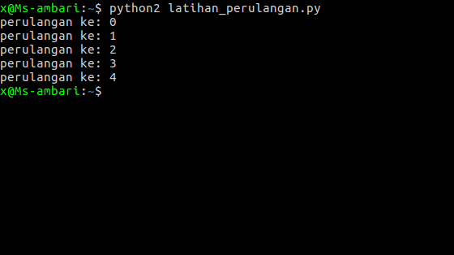
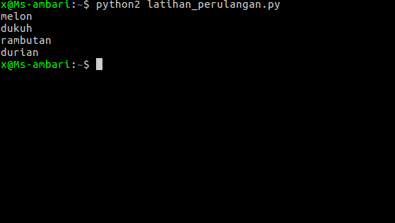
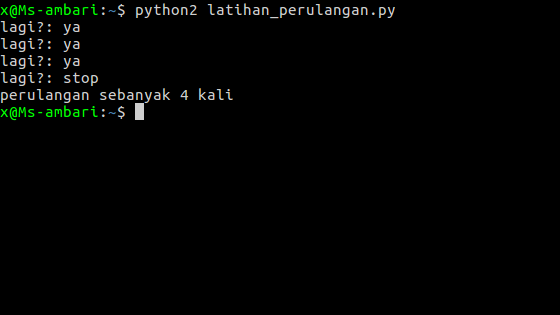
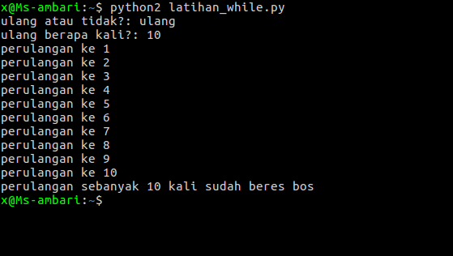

sekarang kita akan belajar loop di python,
1.perulangan for2.perulangan while
penulisan perulangan
for index in range (jumlah_perulangan):
# kode...
# ...
Contoh:
jumlah = 5
for i in range (jumlah):
print "perulangan ke:" ,i
note: variabel 
menampilkan data list menggunakan perulangan
buah = ["melon" ,"dukuh" ,"rambutan" ,"durian" ] # enak ya :D
for hasil in buah:
print hasil
Hasilnya:

bentuk penulisan perulangan
while ( #kondisi ):
# code ...
# ...
Contoh:
hitung = 0
while (True ):
hitung += 1
jawab = raw_input ("lagi?: " )
if jawab != "ya" :
break
print "perulangan sebanyak {} kali" .format (hitung)
Pertama menentukan variabel untuk menghitung,dan menentukan kapan perulangan berhenti, jika user menjawab selain
print "perulangan sebanyak {} kali" .format (hitung)
Hasilnya:

biar lebih joss mari kita latihan, buat file baru bernama
hitung = 0 # membuat variabel untuk menghitung jumlah perulangan
jawab = raw_input ("ulang atau tidak?: " )
if jawab == "ulang" :
tanya_jumlah = input ("ulang berapa kali?: " ) # tanyakan jumlah perulangan jika user menjawab ulang
while (hitung < tanya_jumlah):
hitung += 1
print "perulangan ke {} " .format (hitung)
# menampilkan jumlah perulangan
print "perulangan sebanyak {} kali sudah beres bos" .format (tanya_jumlah)
else :
print "mungkin dia lelah" # jika user menjawab selain ulang
Hasilnya:

oke, sekian pembelajaran tentang loop, semoga kamu sudah mengerti dan silahkan pelajari tutorial selanjutnya